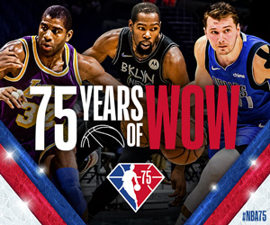

|
NBA conference finals |
||||||
|---|---|---|---|---|---|---|
|
История  |
Финалы конференции Национальной баскетбольной ассоциации (НБА) является предпоследним раундом плей-офф Национальной баскетбольной ассоциации. 2 пары команд участвуют в чемпионских сериях Восточной конференции и Западной конференции . НБА была основана в 1946 году как Баскетбольная ассоциация Америки (БАА).[1] Лига приняла нынешнее наименовании с начала сезона 1949/1950, когда объединилась с Национальной баскетбольной лигой (НБЛ).[2] В настоящее время в лиге играет 30 команд, из ник 29 клубов находятся в США и 1 команда в Канаде. Каждая команда играет 82 игры в регулярном сезоне. По окончании регулярного сезона по 8 лучших команд из каждого дивизиона выходят в плей-офф. Две команды, оставшиеся в плей-офф конференции, будут играть с другом в финале. Чемпион конференции будет играть в финале НБА . Миллуоке Бакс являются действующим чеспионом НБА. Для перехода на официальный сайт лиги перейдите по ссылке - Link for offitial ligue`s page |
|||||
|
Восточная конференция (НБА) Восточная конференция Национальной баскетбольной ассоциации состоит из пятнадцати команд, разбитых на три дивизиона по пять команд в каждом. Три победителя дивизионов, а также команда не победитель с лучшим соотношением побед/поражений в конференции получают номера от 1 до 4 в плей-офф в зависимости от количества побед. Еще четыре команды выходят в плей-офф, сделавших больше всех побед из оставшихся. Преимущество домашнего поля получают команды по количеству побед, а не по номеру посева. Таким образом, если команда № 4 и № 5 встретятся в плей-офф, если у № 5 будет больше побед, чем у № 4, то № 5 получит преимущество домашнего поля. |
Западная конференция (НБА) Западная конференция Национальной баскетбольной ассоциации состоит из пятнадцати команд, разбитых на три дивизиона по пять команд в каждом. Три победителя дивизионов, а также команда не победитель с лучшим соотношением побед/поражений в конференции получают номера от 1 до 4 в плей-офф в зависимости от количества побед. Еще четыре команды выходят в плей-офф, сделавших больше всех побед из оставшихся. Преимущество домашнего поля получают команды по количеству побед, а не по номеру посева. Таким образом, если команда № 4 и № 5 встретятся в плей-офф, если у № 5 будет больше побед, чем у № 4, то № 5 получит преимущество домашнего поля. |
|||||
|
Финалы конференций 2022 Что бы получить больше информации, перейдите по ссылке - Финалы конференций 2022 |
||||||
| Контактная информация | Галерея |
Автор страницы - Андрей Гелетий Что бы перейти на страницу автора в Фейсбук, перейдите по ссылке - Cтраница автора в Фейсбук |